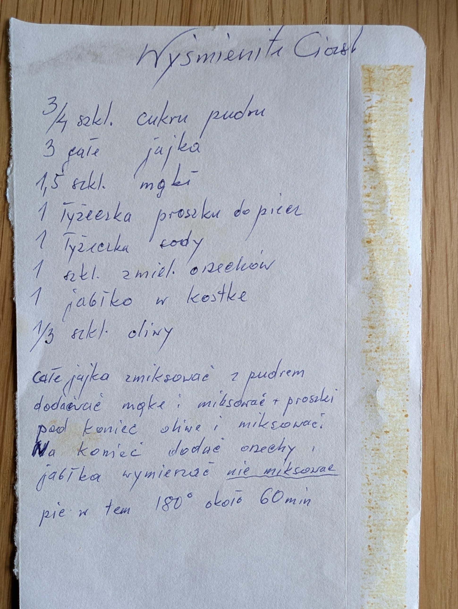

Wyśmienite ciasto

Składniki
- 3/4 szkl. cukru pudru
- 3 całe jajka
- 1,5 szkl. mąki
- 1 łyżeczka proszku do pieczenia
- 1 łyżeczka sody
- 1 szkl. zmielonych orzechów
- 1 jabłko w kostkę
- 1/3 szkl. oliwy
Przygotowanie
- Całe jajka zmiksować z pudrem.
- Dodawać mąkę i miksować, dodać proszki.
- Pod koniec oliwę i miksować.
- Na koniec dodać orzechy i jabłka, wymieszać – nie miksować.
- Piec w temp. 180° około 60 min.
Oryginalny zapis
Wyśmienite Ciasto 3/4 szkl. cukru pudru 3 całe jajka 1,5 szkl. mąki 1 łyżeczka proszku do piecz. 1 łyżeczka sody 1 szkl. zmiel. orzechów 1 jabłko w kostkę 1/3 szkl. oliwy Całe jajka zmiksować z pudrem dodawać mąkę i miksować + proszki pod koniec oliwę i miksować. Na koniec dodać orzechy i jabłka wymieszać nie miksować piec w tem 180° około 60 min